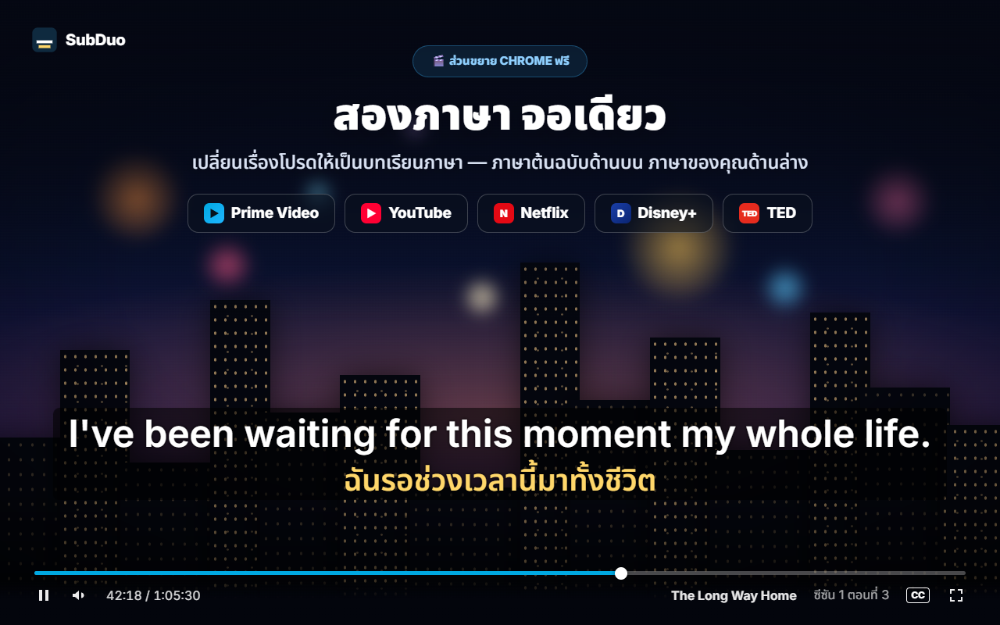
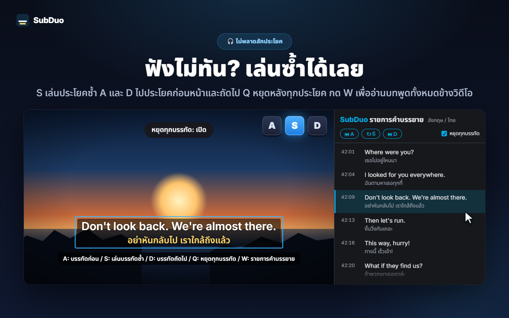
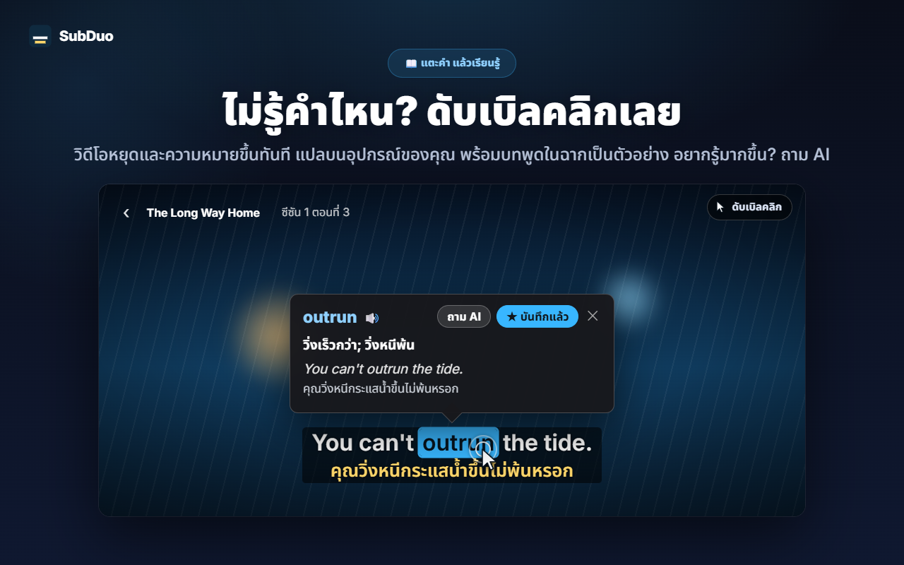
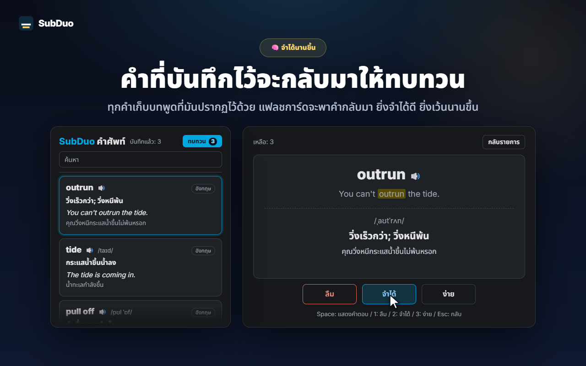

คำบรรยายสองภาษาใดก็ได้
ตรวจพบทุกแทร็กที่เว็บไซต์มีให้เมื่อเริ่มเล่นวิดีโอ รวมถึงคำบรรยายที่สร้างอัตโนมัติของ YouTube เลือกหนึ่งภาษาต่อหนึ่งบรรทัด หรือซ่อนบรรทัดใดบรรทัดหนึ่ง
SubDuo แสดงคำบรรยายสองภาษาพร้อมกัน ภาษาต้นฉบับอยู่ด้านบน ภาษาของคุณอยู่ด้านล่าง ดับเบิลคลิกคำเพื่อดูความหมาย กดปุ่มเดียวเพื่อเล่นบรรทัดซ้ำ และเก็บคำที่ได้เรียนไว้ในคลังคำศัพท์ในตัว
ใช้คำบรรยายที่แต่ละเว็บไซต์มีให้อยู่แล้ว · ไม่ต้องมีบัญชี · คำบรรยายอยู่ในเบราว์เซอร์ของคุณ
โปรแกรมเล่นสตรีมมิงแสดงคำบรรยายได้ทีละภาษา SubDuo เพิ่มภาษาที่สองเข้ามา พร้อมเครื่องมือสำหรับเรียนรู้จากคำบรรยายนั้น
หน้าจอจริงจากส่วนขยาย แสดงเป็นภาษาของคุณ

เลือกแทร็กคำบรรยายสองภาษาใดก็ได้ที่เรื่องนั้นมีให้ ภาษาต้นฉบับด้านบน ภาษาของคุณด้านล่าง ลากคำบรรยายไปไว้ตรงไหนก็ได้ เลื่อนล้อเมาส์บนบรรทัดเพื่อปรับขนาด และคลิกขวาเพื่อเปลี่ยนสี ความโปร่งใส หรือเบลอ

กด S เพื่อเล่นบรรทัดซ้ำ A และ D เพื่อถอยหลังและไปข้างหน้า และ Q เพื่อหยุดอัตโนมัติหลังทุกบรรทัด กด W เพื่อเปิดรายการคำบรรยายในแผงด้านข้างของ Chrome ทั้งสองภาษาทีละบรรทัด คลิกแถวไหนก็ข้ามไปที่ช่วงนั้นได้ทันที

วิดีโอหยุดและการ์ดแสดงความหมายทันที แปลบนอุปกรณ์ของคุณด้วยตัวแปลในตัว Chrome พร้อมบทพูดในฉากนั้นเป็นตัวอย่าง ใช้ Alt+ลากเพื่อเลือกวลี แตะ “ถาม AI” เพื่อดูความหมายตามบริบท การออกเสียง และประโยคตัวอย่าง

ทุกคำที่บันทึกจะเก็บบทพูดที่มาของคำไว้ด้วย ค้นหาและกรองคลังคำศัพท์ ฟังการออกเสียง และทบทวนด้วยแฟลชการ์ด ยิ่งจำคำไหนได้ดี คำนั้นก็ยิ่งเว้นนานก่อนกลับมา
ไม่ต้องมีบัญชี ไม่ต้องตั้งค่าให้ยุ่งยาก ติดตั้งแล้วกดเล่นได้เลย
ติดตั้ง SubDuo จาก Chrome เว็บสโตร์ แล้วเล่นวิดีโอบน Prime Video, YouTube, Netflix, Disney+ หรือ TED
คลิกไอคอน SubDuo แล้วเลือกภาษาคำบรรยายหนึ่งภาษาสำหรับบรรทัดบนและอีกหนึ่งภาษาสำหรับบรรทัดล่าง รายการจะแสดงเฉพาะแทร็กที่เรื่องนั้นมีให้
ดับเบิลคลิกคำเพื่อค้นความหมาย กด A, S หรือ D เพื่อเล่นบรรทัดซ้ำ และเปิดคลังคำศัพท์จากป๊อปอัป
สร้างมาเพื่อคนที่เรียนจากการดู และอยากให้คำบรรยายไม่เกะกะจนกว่าจะต้องใช้
ตรวจพบทุกแทร็กที่เว็บไซต์มีให้เมื่อเริ่มเล่นวิดีโอ รวมถึงคำบรรยายที่สร้างอัตโนมัติของ YouTube เลือกหนึ่งภาษาต่อหนึ่งบรรทัด หรือซ่อนบรรทัดใดบรรทัดหนึ่ง
ดับเบิลคลิกหรือ Alt+คลิกที่คำ หรือ Alt+ลากเพื่อเลือกวลี วิดีโอจะหยุดและคำแปลขึ้นบนวิดีโอ โดยแปลบนอุปกรณ์ของคุณ
ความหมายตามบริบท การออกเสียง และประโยคตัวอย่าง เป็นภาษาที่แสดงที่คุณเลือก ใช้ฟรีสูงสุด 20 ครั้งต่อวัน
บันทึกคำในคลิกเดียว ค้นหา กรองตามภาษา และฟังเสียงด้วย 🔊 แฟลชการ์ดจะเว้นระยะคำที่คุณจำได้แล้วให้ห่างขึ้น
A ไปบรรทัดก่อน S เล่นซ้ำ D ไปบรรทัดถัดไป Q หยุดหลังทุกบรรทัด เบลอบรรทัดหนึ่งเพื่อทดสอบตัวเอง แล้วชี้เมาส์เพื่อเฉลย
ทุกบรรทัดทั้งสองภาษาอยู่ข้างวิดีโอ บรรทัดปัจจุบันจะถูกไฮไลต์ คลิกแถวไหนก็ข้ามไปที่นั่น กด W เพื่อเปิด
ลากเพื่อย้าย เลื่อนล้อเมาส์เพื่อปรับขนาดแต่ละบรรทัด ใช้ปุ่มลูกศรเพื่อขยับเล็กน้อย จัดแนวซ้าย กลาง หรือขวา คลิกขวาเพื่อตั้งสี ความโปร่งใส และเบลอแยกแต่ละบรรทัด
คำบรรยายตัวใหญ่บน YouTube ตัวเล็กเรียบ ๆ บน Netflix การตั้งค่าจะบันทึกแยกตามเว็บไซต์และซิงค์ผ่าน Chrome ของคุณ
เมนู คำแปล และคำอธิบายจาก AI ใช้ภาษาที่แสดงที่คุณเลือก ซึ่งตั้งให้ต่างจากภาษาของ Chrome ได้
SubDuo อ่านไฟล์คำบรรยายที่แต่ละเว็บไซต์ส่งมายังเบราว์เซอร์ของคุณอยู่แล้ว และแสดงผลในเบราว์เซอร์นั้นเอง สิ่งเดียวที่ส่งออกไปคือวลีที่คุณเลือกถาม AI พร้อมบรรทัดคำบรรยายของวลีนั้น
คำบรรยายถูกประมวลผลและแสดงในเบราว์เซอร์ของคุณ การตั้งค่า คลังคำศัพท์ และประวัติการดูจะไม่ถูกส่งไปยังผู้พัฒนา การแปลคำทำงานบนอุปกรณ์ของคุณด้วยตัวแปลในตัว Chrome
เมื่อคุณแตะ “ถาม AI” วลีที่เลือก บรรทัดคำบรรยายของวลีนั้นและอีกบรรทัดบนจอ รหัสภาษา และรหัสอุปกรณ์แบบสุ่ม (สำหรับขีดจำกัดรายวัน) จะถูกส่งไปยังเซิร์ฟเวอร์ SubDuo ซึ่งจะขอคำอธิบายจาก OpenAI ที่อยู่ IP ของคุณจะถูกประมวลผลเพื่อให้บริการทำงานได้
ไม่ต้องสมัครสมาชิก ส่วนขยายไม่มีโฆษณาและไม่มีเครื่องมือวิเคราะห์
“storage” สำหรับการตั้งค่าและคลังคำศัพท์ “scripting” เพื่อเชื่อมต่อแท็บที่เปิดอยู่อีกครั้งหลังอัปเดต “sidePanel” สำหรับรายการคำบรรยาย และสิทธิ์เข้าถึงเฉพาะห้าเว็บไซต์ที่รองรับ
ติดตั้งจาก Chrome เว็บสโตร์ได้ในไม่กี่วินาที